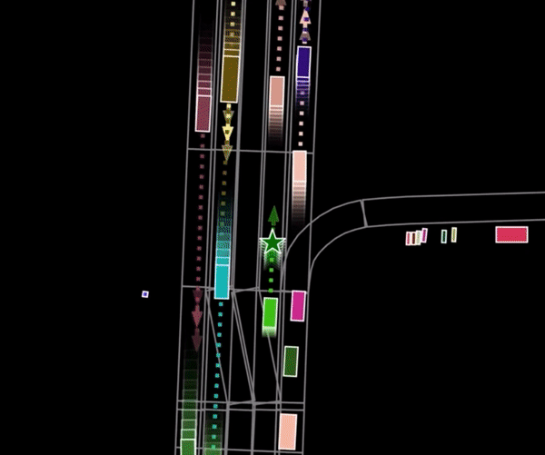
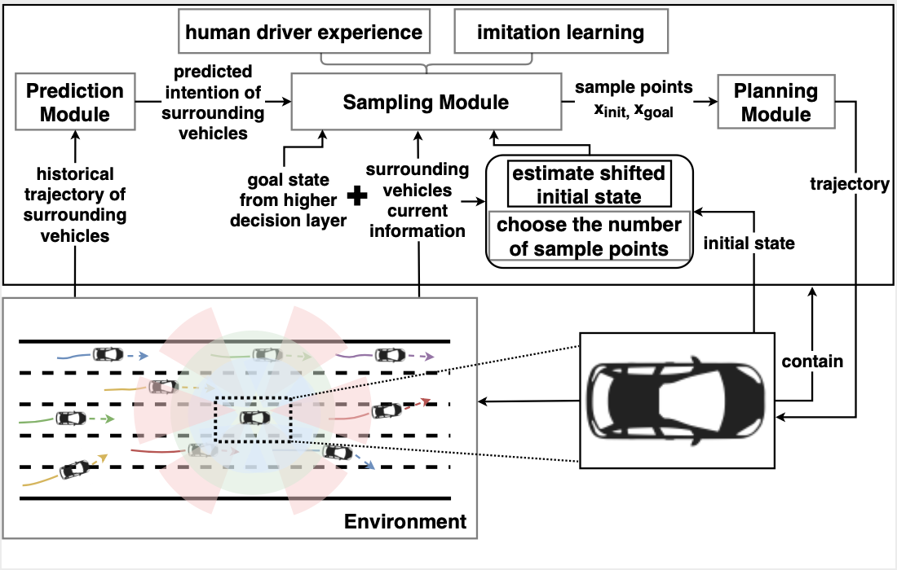

|
|
Introduction
- Hi, this is Jinghuai Zhang, a graduate student at Duke University. Currently, I study the security issues behind self-supervised Learning and 3D vision under the supervision of Prof. Zhenqiang Gong Neil.
- I earned my Bachelar Degree in Computer Science from City University of Hong Kong in July 2020. After that, I spent my invaluable year working at Sensetime Research. I was fortunate to work under the supervision of Prof. Jianping Wang and Prof. Bolei Zhou.
- Before graduate study, I was widely involved in research topics including motion prediction, 3D object detection/tracking, self-supervised learning and style transfer.
Previous Works


Honors
- HKSAR Government Scholarship Fund Academic Award in 2018-2019 and 2019-2020
- Hong Kong, China-Asia-Pacific Economic Cooperation Scholarship
- Hong Kong Computer Society Student Sponsorship
- Department of Computer Science Outstanding Student Scholarships
- First class honor graduate from City University of Hong Kong
- Dean's List
Teaching
- Teaching Assistant: CPS230 Discrete Mathematics for Computer Science (Spring 2022 and Fall 2022)
Personal
I love to play the guitar and go traveling in my spare time.
Also, I was the record-holder of 3000 metres race in my middle school.